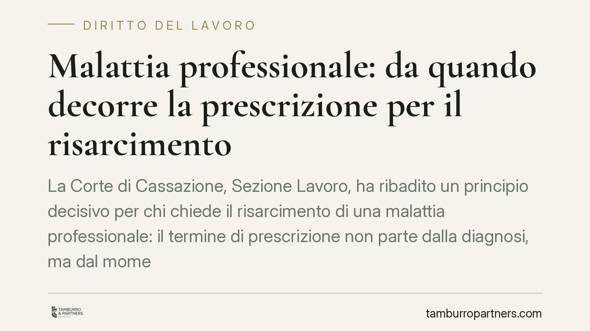

Malattia professionale: da quando decorre la prescrizione per il risarcimento
La Corte di Cassazione, Sezione Lavoro, ha ribadito un principio decisivo per chi chiede il risarcimento di una malattia professionale: il termine di prescrizione non parte dalla diagnosi, ma dal momento in cui il lavoratore acquisisce piena consapevolezza del legame tra patologia e attività svolta. Un chiarimento che sposta in avanti la tutela e riguarda anche gli eredi.

Il caso
La vicenda nasce dalla richiesta di risarcimento avanzata dalla famiglia di un bracciante agricolo, colpito da microcitoma polmonare (una forma aggressiva di tumore del polmone) poi riconosciuto dall'INAIL come tecnopatia, cioè malattia di origine professionale, nel 2022.
La società agricola datrice di lavoro eccepiva la prescrizione, sostenendo che il diritto al risarcimento fosse ormai estinto. La Cassazione ha invece respinto questa lettura, fissando un punto fermo sul momento da cui il termine inizia a decorrere.
Inquadramento normativo
Il diritto al risarcimento del danno derivante da malattia professionale è soggetto a prescrizione: trascorso un certo periodo senza che il diritto venga fatto valere, questo non è più tutelabile in giudizio. La questione, però, non è "quanto dura" il termine, ma "da quando" comincia a correre.
Sul punto opera il principio della cosiddetta "conoscibilità" del danno. La prescrizione non decorre dal fatto lesivo in sé, né dalla semplice comparsa dei sintomi o dalla prima diagnosi, ma dal momento in cui il danneggiato ha avuto — o avrebbe potuto avere usando l'ordinaria diligenza — piena percezione di tre elementi: l'esistenza della malattia, la sua gravità e, soprattutto, il nesso causale con l'attività lavorativa.
È questo l'elemento centrale. Una diagnosi, da sola, non basta: il lavoratore può conoscere la propria patologia senza avere alcuna consapevolezza che essa dipenda dall'esposizione professionale. Solo quando quel collegamento diventa noto — spesso grazie al riconoscimento INAIL — il diritto è concretamente esercitabile e la prescrizione inizia a decorrere.
Implicazioni pratiche
La portata della decisione è ampia, in particolare per le malattie a lunga latenza, come le patologie oncologiche legate all'esposizione a sostanze nocive. Tra l'esposizione e la manifestazione della malattia possono passare anni o decenni.
Per il lavoratore, o per i suoi eredi, questo significa che il tempo per agire non si esaurisce con la diagnosi. Il termine slitta al momento in cui emerge la consapevolezza dell'origine professionale, tipicamente coincidente con il provvedimento INAIL che qualifica la malattia come tecnopatia.
Per il datore di lavoro, l'eccezione di prescrizione diventa più difficile da far valere: non è sufficiente dimostrare che la malattia fosse nota da tempo, occorre provare che fosse conosciuto anche il collegamento con il lavoro.
Attenzione, però: il principio della conoscibilità non è un salvacondotto illimitato. Il giudice valuta anche cosa il danneggiato avrebbe potuto sapere usando l'ordinaria diligenza. Chi ha elementi concreti per collegare la propria patologia all'attività svolta non può restare inerte confidando in un decorso indefinito del termine.
Cosa fare in concreto
- Conservate ogni documento sanitario: diagnosi, referti, cartelle cliniche e certificati con le relative date. Sono la base per ricostruire il momento della piena consapevolezza.
- Attivate subito la domanda INAIL in caso di sospetta malattia professionale: il riconoscimento della tecnopatia è spesso il momento chiave da cui decorre la prescrizione e rafforza la posizione risarcitoria.
- Non attendete oltre il necessario: appena emerge un possibile nesso tra patologia e lavoro, verificate i termini. Il decorso posticipato non giustifica l'inerzia una volta acquisita la consapevolezza.
- Verificate la posizione degli eredi: in caso di decesso del lavoratore, i familiari possono vantare diritti autonomi. Consigliamo di ricostruire con attenzione date e documentazione prima di ogni iniziativa.
- Fatevi assistere per la ricostruzione temporale: individuare con precisione il momento della conoscibilità è spesso decisivo e richiede una valutazione tecnica caso per caso.
Conclusioni
La decisione conferma un orientamento a tutela del lavoratore nelle malattie a lenta insorgenza. Il messaggio è chiaro: la prescrizione non punisce chi non poteva sapere. Ma la stessa logica impone di agire con tempestività una volta che il quadro diventa chiaro.
---
*Contributo informativo a cura di Tamburro & Partners - Avv. Giuseppe Tamburro. Non costituisce parere legale.*
Ogni storia di lavoro ha i suoi tempi.
Se gestisci HR e vuoi un confronto su contenzioso, ispezioni o licenziamenti, scrivi allo studio. Ti rispondiamo entro un giorno lavorativo.